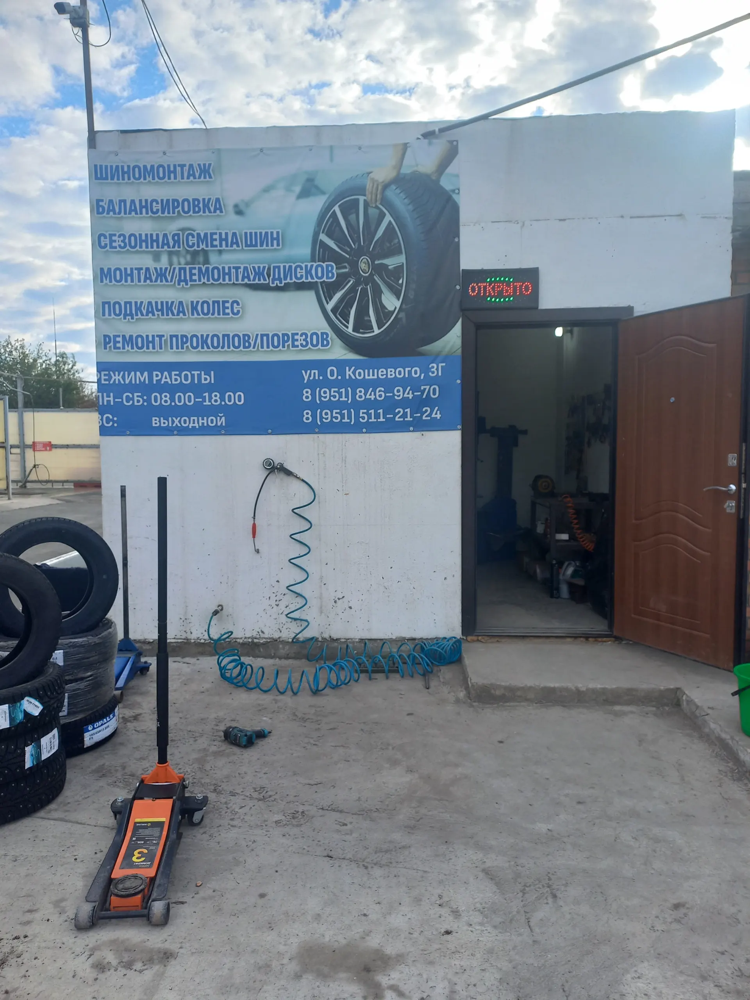
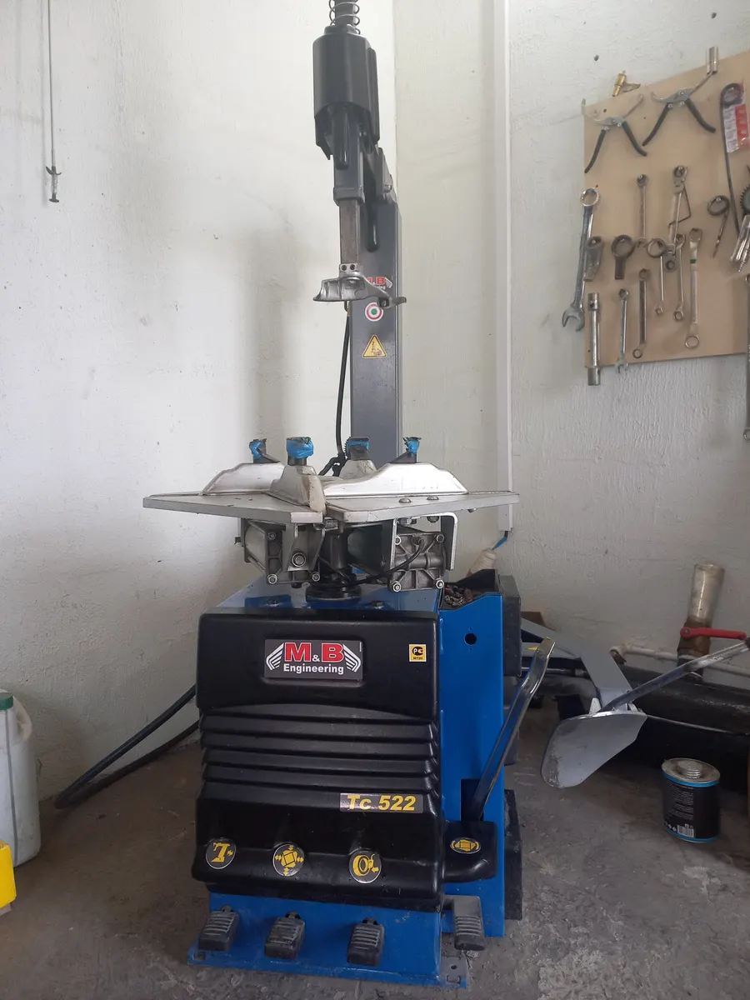
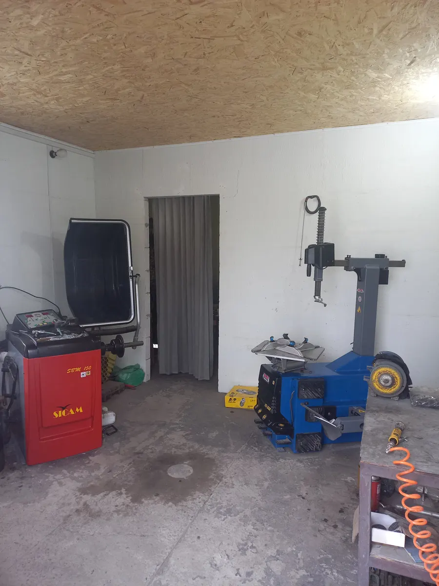
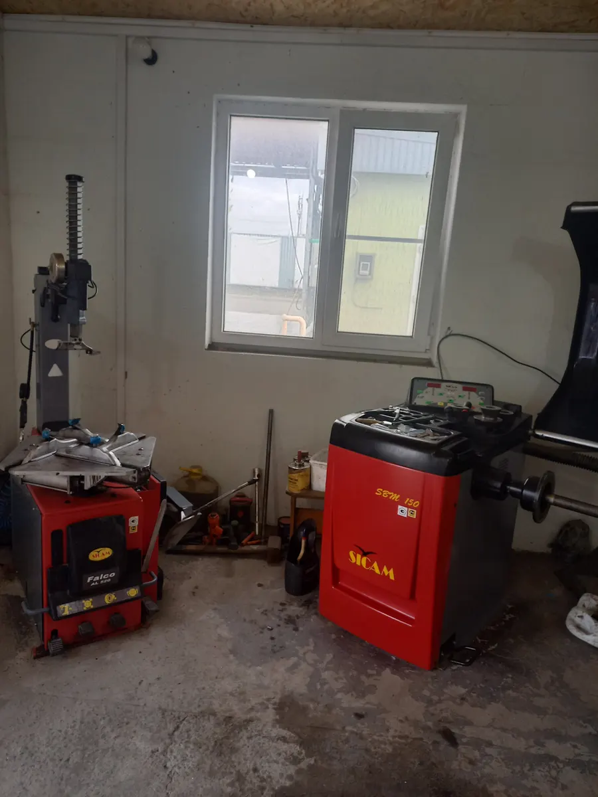

Шиномонтаж · Покровское
Шиномонтаж в Покровском: выручаем, даже когда уже закрыто
Так пишут клиенты в отзывах на Яндекс.Картах. Работаем с понедельника по субботу, с 8:00 до 18:00.
- Пн–сб с 08:00 до 18:00, воскресенье выходной
- Рейтинг 4,9 на Яндекс.Картах, «Хорошее место 2026»
- По отзывам, помогают и после закрытия

Услуги и цены
На карточке указана одна цена. Остальные позиции уточняйте при записи.
Услуги
- Шиномонтажцена с карточки на Яндекс.Картах1 300 ₽
- Балансировкауточнить
- Сезонная смена шинуточнить
- Монтаж и демонтаж дисковуточнить
- Подкачка колёсуточнить
- Ремонт проколов и порезовуточнить
Цены уточняйте у мастера при записи.
Как проходит
- 01
Записались на удобное время
В Telegram или по телефону +7 (951) 511-21-24.
- 02
Приехали к назначенному времени
Клиенты пишут, что обслуживание начинают вовремя.
- 03
Мастер сделал работу
Шиномонтаж, балансировка, ремонт проколов и порезов.
Когда пора переобуваться
Общее правило: резину меняют, когда среднесуточная температура устойчиво держится около +7°.
Ниже +7° – на зимнюю
Когда среднесуточная температура устойчиво ниже +7°.
Выше +7° – на летнюю
Когда среднесуточная температура устойчиво выше +7°.
Прокол и порез – в любое время
Клиенты пишут, что мастер выручал и после закрытия.



Что пишут клиенты
Не отказывают в помощи
В отзывах: приняли после закрытия, помогли, когда в другом месте отказали.
Приезжают по ночному звонку
Двое клиентов пишут, что мастер приехал ночью, когда пробило колесо на трассе.
Не навязывают лишнего
Из отзыва: «Дополнительные услуги не навязывают».
Обслуживание начинают вовремя
Из отзыва: приехала к назначенному времени, начали без ожидания.
Отзывы с Яндекс.Карт
«Отличный шиномонтаж! Пробили колесо на трассе ночью. Доехали когда уже было закрыто , набрали по телефону и мастер приехал через пару минут. Быстро устранил сложный порез! Очень приятный сервис !»
Yns · 18 октября 2025
«Хочу выразить огромную блпгодарность за проделанную работу. Шиномонтаж уже закончил свой рабочий день, но мне всё равно согласились помочь. Вместо «мы уже закрылись», я получил помощь и качественноо выполненную работу. Рекомендую.»
Максим · 18 октября 2025
«Отличный шиномонтаж! Точно по записи, быстро и без очередей. Дополнительные услуги не навязывают. Всё по делу. Качество на высоте. Рекомендую!»
Вячеслав Пономаренко · 1 февраля
Отзывы с карточки на Яндекс.Картах, без правок.
Частые вопросы
Когда вы работаете?
С понедельника по субботу с 8:00 до 18:00. Воскресенье выходной.
Как записаться?
Выберите услугу, день и время выше: откроется чат в Telegram с готовым сообщением, останется нажать «Отправить». Можно позвонить: +7 (951) 511-21-24.
Сколько стоит шиномонтаж?
На карточке указано 1300 ₽. Цены на остальные услуги уточняйте при записи.
Где вы находитесь?
Село Покровское, ул. Олега Кошевого, 3Г.
Запишитесь к своему времени
- Адрес
- ул. Олега Кошевого, 3Г, Покровское
- Часы
- Пн–сб 08:00–18:00, воскресенье выходной
- Телефон
- +7 (951) 511-21-24